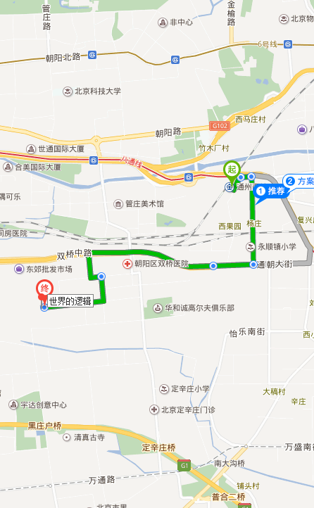

<div class="pages">
	   <div data-page="Navigation" class="page">

        <div class="navbar">
            <div class="navbar-inner">
                <div class="left">
                    <a href="#" class="link back">
                <i class="fa fa-angle-left"></i>
            </a>
                </div>

                <div class="center" style="color:#fff">导航</div>

                <div class="right">

                </div>
            </div>
        </div>
        
        <div>
     		
     	</div>
        
        
	  <div class="toolbar" >

	  </div>


</div>


